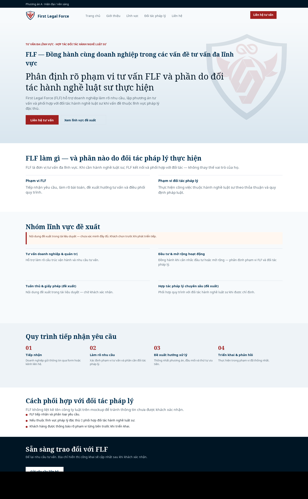
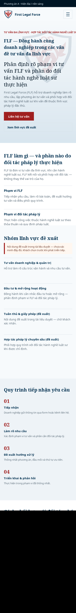
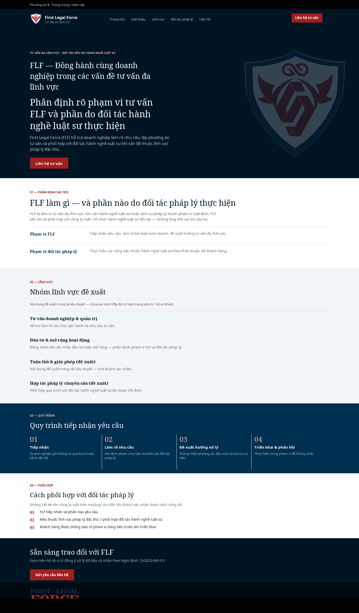
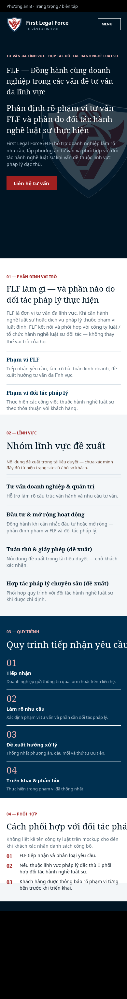

Phương án A — Hiện đại, nền sáng
Nhiều khoảng trắng, nền sáng, xanh đen + đỏ theo logo. Phù hợp cảm giác tư vấn doanh nghiệp gọn, dễ quét nội dung.
Tài liệu duyệt · Giai đoạn chọn hướng
Cùng một bộ nội dung tiếng Việt mẫu. Khách xem desktop/mobile của từng phương án, đọc sơ đồ trang và bản nháp trang dịch vụ, rồi chọn hướng trước khi team phát triển tiếp (không dựng CMS ở lượt này).
Nhiều khoảng trắng, nền sáng, xanh đen + đỏ theo logo. Phù hợp cảm giác tư vấn doanh nghiệp gọn, dễ quét nội dung.
Typography có điểm nhấn, xanh đen chủ đạo, bố cục biên tập rõ. Phù hợp cảm giác tư vấn nghiêm túc, phân tầng nội dung mạnh.




Thông điệp đề xuất: «FLF — Đồng hành cùng doanh nghiệp trong các vấn đề tư vấn đa lĩnh vực». Nhóm lĩnh vực ghi rõ là nội dung đề xuất. Không có tên đối tác, số liệu thành tích, chứng nhận hay cam kết kết quả. Logo dùng file gốc đã gửi — không vẽ lại.